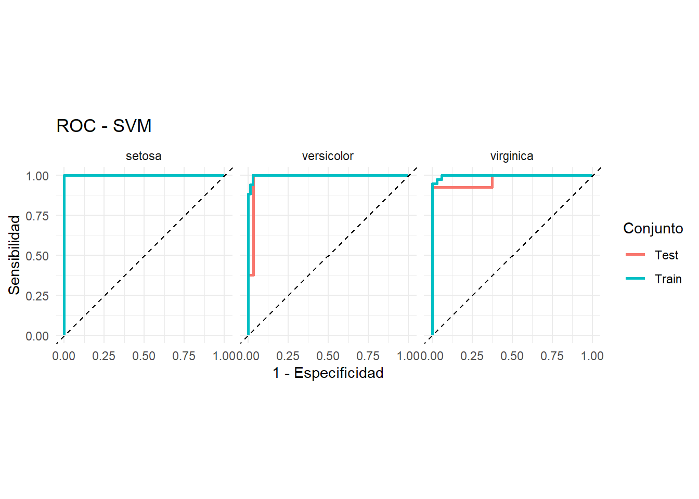

Código
library(tidymodels)Enfoque Estadístico del Aprendizaje 2026
Tidymodels ofrece un flujo de trabajo estructurado, reproducible y consistente que facilita y mejora la implementación y evaluación de modelos de regresión y clasificación en R.

Si no tenés instalado
tidymodelspodés hacerlo corriendo el siguiente código
install.packages("tidymodels")Los paquetes mas relevantes:
rsample: para realizar la división del dataset en entrenamiento, validación y testeo.
recipes: para el preprocesamiento
parnship: para especificar el modelo
yardstick: para evaluar el modelo
library(tidymodels)Veamos un ejemplo con iris

con rsample::initial_split() creamos una división entre train y test
set.seed(1234)
iris_split <- initial_split(iris,
prop = 0.7)
iris_split<Training/Testing/Total>
<105/45/150>Cuando llamamos al objeto iris_split nos muestra la cantidad de elementos en train/test/total
Si queremos recuperar el dataset de entrenamiento, utilizamos el comando training()
iris_split %>%
training() Sepal.Length Sepal.Width Petal.Length Petal.Width Species
1 5.2 3.5 1.5 0.2 setosa
2 5.7 2.6 3.5 1.0 versicolor
3 6.3 3.3 6.0 2.5 virginica
4 6.5 3.2 5.1 2.0 virginica
5 6.3 3.4 5.6 2.4 virginica
6 6.4 2.8 5.6 2.2 virginica
7 6.8 3.2 5.9 2.3 virginica
8 7.9 3.8 6.4 2.0 virginica
9 6.2 2.9 4.3 1.3 versicolor
10 7.1 3.0 5.9 2.1 virginica
11 5.5 2.5 4.0 1.3 versicolor
12 5.6 2.5 3.9 1.1 versicolor
13 6.0 2.9 4.5 1.5 versicolor
14 6.4 3.2 5.3 2.3 virginica
15 4.3 3.0 1.1 0.1 setosa
16 7.2 3.2 6.0 1.8 virginica
17 5.9 3.0 4.2 1.5 versicolor
18 4.6 3.1 1.5 0.2 setosa
19 5.8 2.7 5.1 1.9 virginica
20 5.1 3.4 1.5 0.2 setosa
21 5.8 2.6 4.0 1.2 versicolor
22 5.6 2.8 4.9 2.0 virginica
23 5.0 3.6 1.4 0.2 setosa
24 6.7 3.1 4.4 1.4 versicolor
25 6.1 2.6 5.6 1.4 virginica
26 5.1 3.8 1.6 0.2 setosa
27 7.4 2.8 6.1 1.9 virginica
28 7.7 2.8 6.7 2.0 virginica
29 6.0 2.7 5.1 1.6 versicolor
30 4.6 3.2 1.4 0.2 setosa
31 7.3 2.9 6.3 1.8 virginica
32 4.7 3.2 1.3 0.2 setosa
33 6.7 3.1 4.7 1.5 versicolor
34 5.0 3.5 1.3 0.3 setosa
35 5.8 2.8 5.1 2.4 virginica
36 5.7 2.8 4.1 1.3 versicolor
37 6.1 2.8 4.0 1.3 versicolor
38 5.4 3.4 1.5 0.4 setosa
39 4.5 2.3 1.3 0.3 setosa
40 4.4 3.2 1.3 0.2 setosa
41 4.9 3.0 1.4 0.2 setosa
42 6.4 3.1 5.5 1.8 virginica
43 5.5 2.3 4.0 1.3 versicolor
44 5.3 3.7 1.5 0.2 setosa
45 5.8 2.7 5.1 1.9 virginica
46 5.7 2.8 4.5 1.3 versicolor
47 7.0 3.2 4.7 1.4 versicolor
48 5.4 3.9 1.7 0.4 setosa
49 4.9 2.5 4.5 1.7 virginica
50 7.2 3.0 5.8 1.6 virginica
51 5.7 3.0 4.2 1.2 versicolor
52 7.6 3.0 6.6 2.1 virginica
53 6.3 3.3 4.7 1.6 versicolor
54 5.0 3.4 1.5 0.2 setosa
55 5.0 3.0 1.6 0.2 setosa
56 5.4 3.9 1.3 0.4 setosa
57 6.0 2.2 4.0 1.0 versicolor
58 5.7 2.9 4.2 1.3 versicolor
59 5.1 3.7 1.5 0.4 setosa
60 4.9 3.1 1.5 0.2 setosa
61 6.5 3.0 5.5 1.8 virginica
62 6.2 3.4 5.4 2.3 virginica
63 7.7 2.6 6.9 2.3 virginica
64 6.0 3.4 4.5 1.6 versicolor
65 6.9 3.1 5.1 2.3 virginica
66 4.9 3.1 1.5 0.1 setosa
67 6.5 2.8 4.6 1.5 versicolor
68 6.1 3.0 4.6 1.4 versicolor
69 4.8 3.4 1.9 0.2 setosa
70 6.3 2.3 4.4 1.3 versicolor
71 5.0 3.3 1.4 0.2 setosa
72 6.0 3.0 4.8 1.8 virginica
73 5.1 3.8 1.5 0.3 setosa
74 6.9 3.1 5.4 2.1 virginica
75 5.0 2.3 3.3 1.0 versicolor
76 5.9 3.2 4.8 1.8 versicolor
77 5.0 2.0 3.5 1.0 versicolor
78 6.3 2.9 5.6 1.8 virginica
79 6.7 2.5 5.8 1.8 virginica
80 5.0 3.4 1.6 0.4 setosa
81 6.9 3.2 5.7 2.3 virginica
82 5.2 2.7 3.9 1.4 versicolor
83 5.6 2.9 3.6 1.3 versicolor
84 5.0 3.2 1.2 0.2 setosa
85 5.9 3.0 5.1 1.8 virginica
86 5.7 3.8 1.7 0.3 setosa
87 4.4 2.9 1.4 0.2 setosa
88 6.3 2.8 5.1 1.5 virginica
89 4.7 3.2 1.6 0.2 setosa
90 6.4 3.2 4.5 1.5 versicolor
91 5.6 2.7 4.2 1.3 versicolor
92 4.9 3.6 1.4 0.1 setosa
93 5.8 2.7 3.9 1.2 versicolor
94 6.7 3.1 5.6 2.4 virginica
95 5.4 3.4 1.7 0.2 setosa
96 6.5 3.0 5.8 2.2 virginica
97 6.8 3.0 5.5 2.1 virginica
98 4.8 3.0 1.4 0.1 setosa
99 6.2 2.2 4.5 1.5 versicolor
100 7.2 3.6 6.1 2.5 virginica
101 7.7 3.8 6.7 2.2 virginica
102 6.3 2.5 4.9 1.5 versicolor
103 5.7 4.4 1.5 0.4 setosa
104 5.4 3.7 1.5 0.2 setosa
105 5.6 3.0 4.5 1.5 versicolorCon recipes::recipe() indicamos que comenzamos un pipeline de preprocesamiento, indicando cúal es la variable a predecir, con Species ~ ..
El objetivo de realizar el preprocesamiento de esta manera es que para muchas etapas del preprocesamiento, como puede ser el cálculo de la media para la imputación, sólo podemos utilizar la información del set de entrenamiento para evitar el data leakage. Por ello, si construimos un pipeline donde se calcula todo sobre entrenamiento, después es más sencillo reutilizarlo en test, sin cometer errores de este tipo.
recipe() Empieza un nuevo set de transformaciones para ser aplicadas.
prep() Ejecuta las transformaciones en el set de entrenamiento
Cada tranformación es un step(paso). Las funciones son tipos específicos de pasos. En este caso utilizamos:
step_corr() Elimina las variables que tienen una correlación alta con otras variables step_center() Centra los datos para que tengan media cero step_scale() Normaliza los datos para que tengan desvío estandar de 1.
Las funciones all_predictors y all_outcomes ayudan a especificar sobre qué valores hay que realizar las transformaciones.
iris_recipe <- training(iris_split) %>%
recipe(Species ~.) %>%
step_corr(all_predictors()) %>%
step_scale(all_predictors(), -all_outcomes()) %>%
prep()
iris_recipe── Recipe ──────────────────────────────────────────────────────────────────────── Inputs Number of variables by roleoutcome: 1
predictor: 4── Training information Training data contained 105 data points and no incomplete rows.── Operations • Correlation filter on: Petal.Length | Trained• Scaling for: Sepal.Length, Sepal.Width, Petal.Width | TrainedCon la función bake() podemos aplicar la receta que preparamos antes para los datos de entrenamiento. Para ello el primer objeto que pasamos es la receta y como parámetro de bake pasamos el dataset de test (recuperado con la función testing de rsample)
iris_test <- iris_recipe %>%
bake(testing(iris_split))
iris_test# A tibble: 45 × 4
Sepal.Length Sepal.Width Petal.Width Species
<dbl> <dbl> <dbl> <fct>
1 5.97 8.20 0.258 setosa
2 5.39 7.97 0.387 setosa
3 5.62 7.97 0.258 setosa
4 6.79 9.37 0.258 setosa
5 5.97 8.20 0.387 setosa
6 5.39 8.44 0.258 setosa
7 5.97 7.73 0.645 setosa
8 6.09 7.97 0.258 setosa
9 5.62 7.27 0.258 setosa
10 6.09 9.61 0.129 setosa
# ℹ 35 more rowsDado que la receta ya fue construida con los datos de entrenamiento, no tendría sentido utilizar el mismo pipeline para recuperar estos datos. Para ello utilizamos la función juice directamente sobre la receta.
iris_train <- juice(iris_recipe)
iris_train# A tibble: 105 × 4
Sepal.Length Sepal.Width Petal.Width Species
<dbl> <dbl> <dbl> <fct>
1 6.09 8.20 0.258 setosa
2 6.67 6.09 1.29 versicolor
3 7.38 7.73 3.23 virginica
4 7.61 7.50 2.58 virginica
5 7.38 7.97 3.10 virginica
6 7.49 6.56 2.84 virginica
7 7.96 7.50 2.97 virginica
8 9.25 8.91 2.58 virginica
9 7.26 6.80 1.68 versicolor
10 8.31 7.03 2.71 virginica
# ℹ 95 more rowsEn R hay muchos paquetes que implementan el mismo tipo de modelo. Normalmente cada implementación define los parámetros del modelo de forma distinta. Por ejemplo, para el modelo Random Forest, la librería ranger define el número de árboles como num.trees, mientras que la librería randomForest lo nombra ntree.
Se puede entrenar cualquier modelo (que este incluído en tidymodels) siguiendo los pasos que se muestran a continuación.
1- Especificar el modelo (eg. Regresión logística, Random Forest, SVM, etc)
2- Con set_engine() se especifíca la familia de modelos
3- Con set_mode() se especifica el tipo de modelo a entrenarse (regresión o clasificación)
4- Usar la función fit () para entrenar el modelo y, dentro de eso, debe proporcionar la notación de la fórmula y el conjunto de datos
##Con los hiperparámetros por default
#SVM
model_SVM <-
svm_rbf() %>%
set_mode("classification") %>%
set_engine("kernlab") %>%
fit(Species ~ ., data = iris_train)
#Random Forest
model_RF <- rand_forest() %>%
set_engine("ranger") %>%
set_mode("classification") %>%
set_args(trees = 100) %>%
fit(Species ~ ., data = iris_train)Para predecir los datos de test y train utilizamos la conocida función predict. Sin embargo, cuando utilizamos esta función sobre un objeto de la librería parsnip devuelve un tibble
Para agregar las predicciones a los datos de test podemos utilizar la función bind_cols
# SVM - Train
iris_train_svm <- bind_cols(
predict(model_SVM, iris_train, type = "class"),
predict(model_SVM, iris_train, type = "prob")
) %>%
bind_cols(iris_train)
# SVM - Test
iris_test_svm <- bind_cols(
predict(model_SVM, iris_test, type = "class"),
predict(model_SVM, iris_test, type = "prob")
) %>%
bind_cols(iris_test)
# Random Forest - Train
iris_train_rf <- bind_cols(
predict(model_RF, iris_train, type = "class"),
predict(model_RF, iris_train, type = "prob")
) %>%
bind_cols(iris_train)
# Random Forest - Test
iris_test_rf <- bind_cols(
predict(model_RF, iris_test, type = "class"),
predict(model_RF, iris_test, type = "prob")
) %>%
bind_cols(iris_test)
Curvas ROC
Las curvas ROC (Receiver Operating Characteristic) permiten evaluar la capacidad de un modelo de clasificación para discriminar entre clases considerando distintos umbrales de decisión. La curva representa la sensibilidad frente a la tasa de falsos positivos (1 - especificidad) para diferentes valores del umbral.
AUC= área bajo la curva ROC, que también sirve para comparar modelos.

Como iris es un problema de clasificación multiclase, las curvas ROC se construyen utilizando un enfoque one-vs-rest. De esta manera, se evalúa la capacidad del modelo para distinguir cada especie respecto de las otras dos.
Con la función yardstick::metrics() podemos medir la performance del modelo. Elige automáticamente las métricas apropiadas dado el tipo de modelo. Necesitamos aclarar cuáles son los datos predichos,estimate y reales, truth.
metricas <- metric_set(
accuracy,
sensitivity
)
# Función para calcular métricas
calcular_metricas <- function(datos, modelo, conjunto) {
datos %>%
metricas(
truth = Species,
estimate = .pred_class
) %>%
mutate(
Modelo = modelo,
Conjunto = conjunto
)
}
# Calcular métricas
metricas_comparacion <- bind_rows(
calcular_metricas(iris_train_svm, "SVM", "Train"),
calcular_metricas(iris_test_svm, "SVM", "Test"),
calcular_metricas(iris_train_rf, "Random Forest", "Train"),
calcular_metricas(iris_test_rf, "Random Forest", "Test")
) %>%
select(Modelo, Conjunto, .metric, .estimate) %>%
pivot_wider(
names_from = .metric,
values_from = .estimate
)
metricas_comparacion# A tibble: 4 × 4
Modelo Conjunto accuracy sensitivity
<chr> <chr> <dbl> <dbl>
1 SVM Train 0.962 0.962
2 SVM Test 0.933 0.933
3 Random Forest Train 0.971 0.972
4 Random Forest Test 0.956 0.954Vamos a construir las curvas ROC
# Función para calcular ROC
calcular_roc <- function(datos, modelo, conjunto) {
datos %>%
roc_curve(
truth = Species,
.pred_setosa,
.pred_versicolor,
.pred_virginica
) %>%
mutate(
Modelo = modelo,
Conjunto = conjunto
)
}
# Calcular ROC
roc_comparacion <- bind_rows(
calcular_roc(iris_train_svm, "SVM", "Train"),
calcular_roc(iris_test_svm, "SVM", "Test"),
calcular_roc(iris_train_rf, "Random Forest", "Train"),
calcular_roc(iris_test_rf, "Random Forest", "Test")
)roc_comparacion %>%
filter(Modelo == "SVM") %>%
ggplot(aes(
x = 1 - specificity,
y = sensitivity,
color = Conjunto
)) +
geom_path(linewidth = 1) +
geom_abline(
linetype = "dashed"
) +
facet_wrap(~.level) +
coord_equal() +
labs(
title = "ROC - SVM",
x = "1 - Especificidad",
y = "Sensibilidad",
color = "Conjunto"
) +
theme_minimal()
roc_comparacion %>%
filter(Modelo == "Random Forest") %>%
ggplot(aes(
x = 1 - specificity,
y = sensitivity,
color = Conjunto
)) +
geom_path(linewidth = 1) +
geom_abline(
linetype = "dashed"
) +
facet_wrap(~.level) +
coord_equal() +
labs(
title = "ROC - Random Forest",
x = "1 - Especificidad",
y = "Sensibilidad",
color = "Conjunto"
) +
theme_minimal()
roc_test <- roc_comparacion %>%
filter(Conjunto == "Test")
ggplot(
roc_test,
aes(
x = 1 - specificity,
y = sensitivity,
color = Modelo
)
) +
geom_path(linewidth = 1) +
geom_abline(linetype = "dashed") +
facet_wrap(~ .level) +
coord_equal() +
labs(
title = "Curvas ROC en el conjunto de test",
x = "1 - Especificidad",
y = "Sensibilidad",
color = "Modelo"
) +
theme_minimal()
Ahora se calcula AUC.
calcular_auc <- function(datos, modelo, conjunto) {
datos %>%
roc_auc(
truth = Species,
.pred_setosa,
.pred_versicolor,
.pred_virginica
) %>%
mutate(
Modelo = modelo,
Conjunto = conjunto
)
}
auc_comparacion <- bind_rows(
calcular_auc(iris_train_svm, "SVM", "Train"),
calcular_auc(iris_test_svm, "SVM", "Test"),
calcular_auc(iris_train_rf, "Random Forest", "Train"),
calcular_auc(iris_test_rf, "Random Forest", "Test")
)
auc_comparacion %>%
select(Modelo, Conjunto, .metric, .estimator, .estimate)# A tibble: 4 × 5
Modelo Conjunto .metric .estimator .estimate
<chr> <chr> <chr> <chr> <dbl>
1 SVM Train roc_auc hand_till 0.998
2 SVM Test roc_auc hand_till 0.982
3 Random Forest Train roc_auc hand_till 0.999
4 Random Forest Test roc_auc hand_till 0.980Se resume toda la información en una Tabla
tabla_final <- metricas_comparacion %>%
left_join(
auc_comparacion %>%
group_by(Modelo, Conjunto) %>%
summarise(
AUC_promedio = mean(.estimate),
.groups = "drop"
),
by = c("Modelo", "Conjunto")
)
tabla_final# A tibble: 4 × 5
Modelo Conjunto accuracy sensitivity AUC_promedio
<chr> <chr> <dbl> <dbl> <dbl>
1 SVM Train 0.962 0.962 0.998
2 SVM Test 0.933 0.933 0.982
3 Random Forest Train 0.971 0.972 0.999
4 Random Forest Test 0.956 0.954 0.980